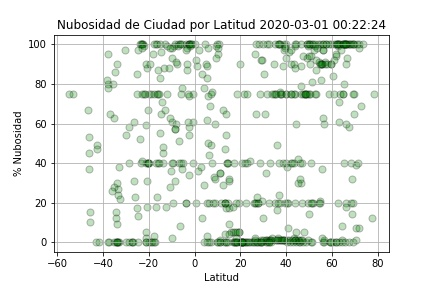
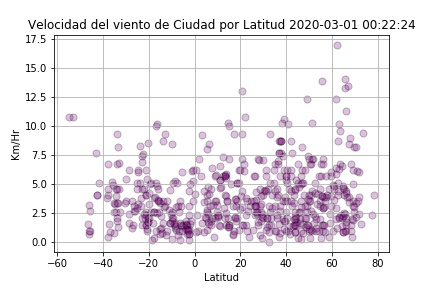

Summary: Lattitude vs Temperaure

El ejercicio consistió en generar una lista 1500 georeferencias que estivueran entre los +-90 grados de latitud. Esta está 1500 se buscaron una a una las ciudad más cercana, con lo que se obtuvieron 650 ciudades, con sus georeferencias, usan la aplicación citipy, Posteriormente se utilizo la api de open weather map para buscar esas 650 ciudades y obtener datos de temperatura, nubosidad, humedad y velocidad del viento.
Después de integrar una sóla base de datos, pasamo a mapear la latidus versus la Temperatura, Humedad, Nubosidad y Viento. Hicimos una sepracaión de la base en noter y sur y graficamos lo mismo, pero sacamos ahora la correlación lineal de cada grupo de datos.
Visualizations


